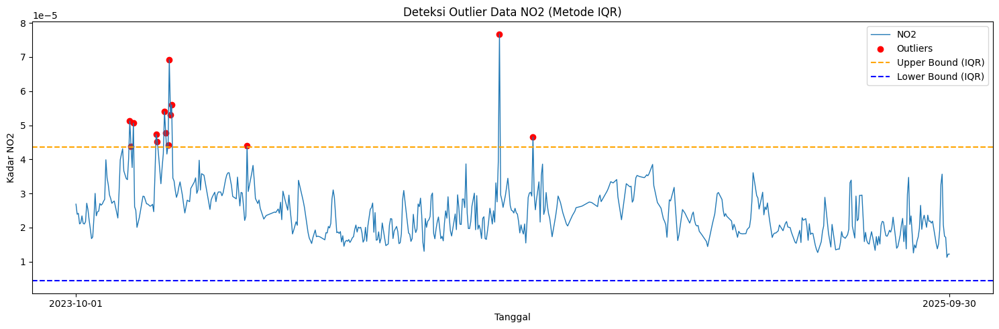
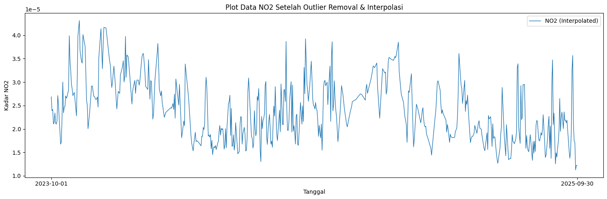

Time-Series#
import openeo
---------------------------------------------------------------------------
ModuleNotFoundError Traceback (most recent call last)
Cell In[1], line 1
----> 1 import openeo
ModuleNotFoundError: No module named 'openeo'
connection = openeo.connect("openeo.dataspace.copernicus.eu").authenticate_oidc()
Authenticated using refresh token.
aoi = {
"type": "Polygon",
"coordinates": [
[
[
131.8595539521603,
-0.24378014489177247
],
[
134.48844572156236,
-0.24378014489177247
],
[
134.48843876611602,
-2.315227200543717
],
[
131.8595539521603,
-2.315228446256455
],
[
131.8595539521603,
-0.24378014489177247
]
]
]
}
s5post = connection.load_collection(
"SENTINEL_5P_L2",
temporal_extent=["2023-10-01", "2025-10-01"],
spatial_extent={
"west": 112.68,
"south": -7.20,
"east": 113.09,
"north": -6.89
},
bands=["NO2"],
)
# Now aggregate by day to avoid having multiple data per day
s5p_no2_daily = s5post.aggregate_temporal_period(reducer="mean", period="day")
# Now create a spatial aggregation to generate mean timeseries data
s5p_no2_aoi = s5p_no2_daily.aggregate_spatial(reducer="mean", geometries=aoi)
job = s5post.execute_batch(title="NO2 in Papua", outputfile="NO2Papua.nc")
0:00:00 Job 'j-260603035931457cb89ac6c1477e90bc': send 'start'
0:00:05 Job 'j-260603035931457cb89ac6c1477e90bc': queued (progress 0%)
0:00:11 Job 'j-260603035931457cb89ac6c1477e90bc': queued (progress 0%)
0:00:18 Job 'j-260603035931457cb89ac6c1477e90bc': queued (progress 0%)
0:00:26 Job 'j-260603035931457cb89ac6c1477e90bc': queued (progress 0%)
0:00:36 Job 'j-260603035931457cb89ac6c1477e90bc': queued (progress 0%)
0:00:53 Job 'j-260603035931457cb89ac6c1477e90bc': running (progress N/A)
0:01:09 Job 'j-260603035931457cb89ac6c1477e90bc': running (progress N/A)
0:01:29 Job 'j-260603035931457cb89ac6c1477e90bc': running (progress N/A)
0:01:53 Job 'j-260603035931457cb89ac6c1477e90bc': running (progress N/A)
0:02:23 Job 'j-260603035931457cb89ac6c1477e90bc': running (progress N/A)
0:03:01 Job 'j-260603035931457cb89ac6c1477e90bc': running (progress N/A)
0:03:48 Job 'j-260603035931457cb89ac6c1477e90bc': running (progress N/A)
0:04:48 Job 'j-260603035931457cb89ac6c1477e90bc': running (progress N/A)
0:05:49 Job 'j-260603035931457cb89ac6c1477e90bc': running (progress N/A)
0:06:50 Job 'j-260603035931457cb89ac6c1477e90bc': finished (progress 100%)
import netCDF4
file_path = "data/NO2Papua.nc"
ds = netCDF4.Dataset(file_path)
# Lihat seluruh variabel yang tersedia
print("📦 Variabel dalam file:")
print(ds.variables.keys())
# dict_keys(['t', 'x', 'y', 'crs', 'NO2'])
# Ambil NO2
no2 = ds.variables["NO2"][:]
# Ambil Time
time = ds.variables["t"][:]
# Konversi waktu ke format tanggal jika punya atribut 'units'
try:
time_units = ds.variables["t"].units
dates = netCDF4.num2date(time, units=time_units)
except Exception:
dates = time # fallback kalau tidak ada units
# Tampilkan struktur data NO2
print(type(no2))
# type <class 'numpy.ma.core.MaskedArray'>
print(len(no2))
# banyaknya data record NO2 725
print(len(no2[0]))
# panjang data perbaris 9
print(len(no2[0][0]))
# panjang perdata 8
print(no2[0][0][0])
# 3.7701793e-05
📦 Variabel dalam file:
dict_keys(['t', 'x', 'y', 'crs', 'NO2'])
<class 'numpy.ma.MaskedArray'>
725
9
8
3.7701793e-05
print("Contoh data pertama:")
for i in range(0, 10):
print(no2[i])
Contoh data pertama:
[[3.770179318962619e-05 4.4227883336134255e-05 2.893842975026928e-05
2.7030169803765602e-05 2.3806940589565784e-05 2.586452137620654e-05
1.6022562704165466e-05 9.385486009705346e-06]
[3.770179318962619e-05 3.1096213206183165e-05 3.226231274311431e-05
2.7030169803765602e-05 2.2647607693215832e-05 3.680306326714344e-05
1.6022562704165466e-05 3.747334631043486e-05]
[2.7158148441230878e-05 3.1096213206183165e-05 4.294700556783937e-05
2.0787138055311516e-05 2.2647607693215832e-05 3.6170044040773064e-05
2.544464950915426e-05 2.3946160581544973e-05]
[2.9651806471520104e-05 3.772687341552228e-05 4.294700556783937e-05
5.6563803809694946e-05 4.394538700580597e-05 3.6170044040773064e-05
6.348737952066585e-05 3.904499681084417e-05]
[2.9651806471520104e-05 4.1052295273402706e-05 -- 5.6563803809694946e-05
-- -- 6.348737952066585e-05 --]
[3.303916673758067e-05 4.1052295273402706e-05 1.2694688848569058e-05 --
-- -- -- --]
[1.5709914805484004e-05 3.258625611124444e-06 1.2694688848569058e-05
2.379269290031516e-06 -8.293241080536973e-06 -- 1.977533975150436e-05
--]
[1.670708843448665e-05 2.8451442631194368e-05 3.690850644488819e-05
2.6973681087838486e-05 2.9640568754984997e-05 1.9493068975862116e-05
1.977533975150436e-05 2.4817900339257903e-05]
[3.001221557497047e-05 2.8451442631194368e-05 1.732594500936102e-05
2.3390346541418694e-05 3.159448169753887e-05 2.6005562176578678e-05
2.4582381229265593e-05 2.4817900339257903e-05]]
[[2.292313365614973e-05 3.167913746437989e-05 3.154170190100558e-05
3.154170190100558e-05 3.2178228138946e-05 3.2178228138946e-05
2.7656618840410374e-05 2.430473978165537e-05]
[3.167913746437989e-05 3.167913746437989e-05 3.235163967474364e-05
3.235163967474364e-05 3.2178228138946e-05 2.2839258235762827e-05
2.430473978165537e-05 2.430473978165537e-05]
[3.167913746437989e-05 2.9591998099931516e-05 3.235163967474364e-05
1.0305229807272553e-05 2.2839258235762827e-05 2.2839258235762827e-05 --
--]
[2.9591998099931516e-05 9.805451554711908e-06 1.0305229807272553e-05
1.0305229807272553e-05 -- -- -- --]
[9.805451554711908e-06 9.805451554711908e-06 1.5380688637378626e-05
1.5380688637378626e-05 -- 2.760508778010262e-06 -- --]
[9.805451554711908e-06 2.3630022042198107e-05 1.5380688637378626e-05
2.525459240132477e-05 2.760508778010262e-06 2.760508778010262e-06
6.487173322966555e-06 6.487173322966555e-06]
[2.3630022042198107e-05 2.754219894995913e-05 2.754219894995913e-05
2.525459240132477e-05 1.0709109119488858e-05 3.103401104453951e-05
3.103401104453951e-05 2.9767230444122106e-05]
[4.458071998669766e-05 2.754219894995913e-05 2.625613342388533e-05
1.0709109119488858e-05 1.0709109119488858e-05 1.7483034753240645e-05
1.7483034753240645e-05 2.9767230444122106e-05]
[4.458071998669766e-05 2.625613342388533e-05 2.625613342388533e-05
2.294184741913341e-05 2.294184741913341e-05 1.7483034753240645e-05
1.6716749087208882e-05 1.9475724911899306e-05]]
[[2.1720452423323877e-05 2.9302424081834033e-05 2.9302424081834033e-05
1.2262202290003188e-05 1.2262202290003188e-05 1.1438644833106082e-05
1.1438644833106082e-05 1.376381806039717e-05]
[2.9302424081834033e-05 2.9302424081834033e-05 2.9302424081834033e-05
1.7328145986539312e-05 1.7328145986539312e-05 1.6348963981727138e-05
1.6348963981727138e-05 1.7384130842401646e-05]
[4.1134917410090566e-05 3.0340952434926294e-05 3.0340952434926294e-05
1.7328145986539312e-05 1.7328145986539312e-05 1.6348963981727138e-05
3.667009877972305e-05 8.2205133367097e-06]
[3.745394496945664e-05 4.171005275566131e-05 4.171005275566131e-05 -- --
3.667009877972305e-05 3.667009877972305e-05 3.667009877972305e-05]
[3.745394496945664e-05 4.171005275566131e-05 -- -- -- -- -- --]
[4.377263758215122e-05 -- -- -- -- -- -- --]
[5.561192301684059e-05 3.917545654985588e-06 3.917545654985588e-06
3.917545654985588e-06 -- -- -- --]
[5.561192301684059e-05 3.917545654985588e-06 3.248131906730123e-05
3.248131906730123e-05 2.5844918127404526e-05 2.5844918127404526e-05
1.7732420019456185e-05 1.7732420019456185e-05]
[6.15993922110647e-05 6.15993922110647e-05 3.248131906730123e-05
3.248131906730123e-05 9.604254046280403e-06 9.604254046280403e-06
1.6310186765622348e-05 1.6310186765622348e-05]]
[[-- -- 3.6266388633521274e-05 2.2021864424459636e-05
2.2021864424459636e-05 3.0609662644565105e-05 1.8663518858375028e-05
9.586026862962171e-06]
[-- -- -- -- 2.1542486138059758e-05 3.0609662644565105e-05
1.8663518858375028e-05 2.4105638658511452e-05]
[-- -- -- -- -- -- -- 2.4105638658511452e-05]
[-- -- -- -- -- -- -- --]
[-- -- -- -- -- -- -- --]
[-- -- -- -- -- -- -- --]
[-- -- -- -- -8.114981937978882e-06 -- -- --]
[1.3256585589260794e-05 -- 7.623657893418567e-06 1.2819242328987457e-05
1.2819242328987457e-05 -8.114981937978882e-06 1.1059440112148877e-05
1.1586063010327052e-05]
[1.3256585589260794e-05 1.921409239002969e-05 1.921409239002969e-05
1.1632509995251894e-05 2.099935954902321e-05 9.704231160867494e-06
1.1059440112148877e-05 1.1586063010327052e-05]]
[[4.1770887037273496e-05 2.2261785488808528e-05 -- 2.790916732919868e-05
2.8738284527207725e-05 2.570549440861214e-05 1.8498791177989915e-05
1.5133420674828812e-05]
[-- 2.2261785488808528e-05 -- -- -- -- 1.8498791177989915e-05
1.5133420674828812e-05]
[2.1543537513935007e-05 -- -- -- -- -- -- --]
[2.1543537513935007e-05 -- -- -- -- -- -- --]
[3.818318509729579e-05 -- -- -- -- -- -- --]
[-- -- -- -- -- -- -- --]
[-- 1.0072748409584165e-05 -- -- -- -- 1.0149389709113166e-05
8.00317309312959e-07]
[2.2353162876243005e-06 1.0072748409584165e-05 -- 3.109184035565704e-05
1.1532478310982697e-05 2.404985934845172e-06 1.0149389709113166e-05
8.00317309312959e-07]
[3.056499554077163e-05 2.8695234504994005e-05 1.54405406647129e-05
3.109184035565704e-05 1.1872314644278958e-05 1.8540640667197295e-05
8.735963092476595e-06 6.99856536812149e-06]]
[[2.701143421290908e-05 2.7994838092126884e-05 2.7880472771357745e-05
2.9396271202131175e-05 2.044800203293562e-05 1.4391212062037084e-05
1.180577510240255e-05 1.896395224321168e-05]
[2.701143421290908e-05 2.098978620779235e-05 2.1305522750481032e-05
2.9396271202131175e-05 2.044800203293562e-05 2.712751302169636e-05
3.770167313632555e-05 1.896395224321168e-05]
[2.6871657610172406e-05 2.098978620779235e-05 -- 3.5969824239145964e-05
1.2527569197118282e-05 2.712751302169636e-05 2.9617929612868465e-05
1.3273730473883916e-05]
[2.260132896481082e-05 2.6214776880806312e-05 -- 2.1592008124571294e-05
1.3796099665341899e-05 2.1326659407350235e-05 2.9617929612868465e-05
3.135521546937525e-05]
[2.260132896481082e-05 1.8499960788176395e-05 8.587756383349188e-06
2.1592008124571294e-05 1.4014864063938148e-05 1.3826818758388981e-05
2.8361637305351906e-05 3.188986738678068e-05]
[2.2605270714848302e-05 2.5870767785818316e-05 1.3612704606202897e-05
3.7452467950060964e-05 3.41187696903944e-05 1.3826818758388981e-05
2.7611102268565446e-05 2.680085162864998e-05]
[1.287747363676317e-05 1.2984149179828819e-05 1.655376036069356e-05
3.7452467950060964e-05 2.363980638619978e-05 1.0346630915591959e-05
2.7611102268565446e-05 1.926199001900386e-05]
[1.287747363676317e-05 2.4451801436953247e-05 2.7177979063708335e-05
3.799449768848717e-05 2.363980638619978e-05 1.7611764633329585e-05
4.347529466031119e-05 1.926199001900386e-05]
[1.8953429389512166e-05 2.4451801436953247e-05 1.5476036423933692e-05
2.242095797555521e-05 1.8916467524832115e-05 1.7611764633329585e-05
2.8669292078120634e-05 1.8009926861850545e-05]]
[[3.735810241778381e-05 3.2456042390549555e-05 2.3371407223748975e-05 --
-- -- -- --]
[-- -- 2.3371407223748975e-05 -- -- -- -- --]
[-- -- -- -- -- -- -- --]
[-- -- -- -- -- -- -- --]
[-- -- -- -- -- -- -2.0719690496662224e-07 --]
[-- -- -- -- 6.8288654802017845e-06 -2.0719690496662224e-07
-2.0719690496662224e-07 1.3876130651624408e-05]
[1.711778895696625e-05 -- 1.5880037608440034e-05 1.5880037608440034e-05
6.8288654802017845e-06 1.741915912134573e-05 1.741915912134573e-05
1.3876130651624408e-05]
[2.9476868803612888e-05 6.415101324819261e-06 1.5880037608440034e-05
8.585888281231746e-06 1.9224073184886947e-05 1.9224073184886947e-05
1.0947288501483854e-05 1.761329622240737e-05]
[2.9476868803612888e-05 2.184703407692723e-05 2.184703407692723e-05
8.585888281231746e-06 2.774379390757531e-05 2.774379390757531e-05
1.0947288501483854e-05 3.259978620917536e-05]]
[[1.9509243429638445e-05 2.1528316210606135e-05 1.917620284075383e-05
1.917620284075383e-05 1.9108652850263752e-05 1.9108652850263752e-05 --
--]
[1.9509243429638445e-05 2.1528316210606135e-05 2.1528316210606135e-05
2.3880462322267704e-05 2.3315800717682578e-05 2.3315800717682578e-05 --
--]
[-- 5.106742537464015e-05 5.106742537464015e-05 2.3880462322267704e-05
2.3315800717682578e-05 2.9143664505681954e-05 -- --]
[-- -- -- -- 2.9143664505681954e-05 2.9143664505681954e-05 -- --]
[-- -- -- -- -- -- -- --]
[-- -- -- -- -- -- -- --]
[1.5064661056385376e-05 1.5064661056385376e-05 1.0902091162279248e-05
-2.1902376829530112e-05 -2.1902376829530112e-05 -- -- --]
[2.4051700165728107e-05 1.5309768059523776e-05 2.667681110324338e-05
2.667681110324338e-05 1.57606991706416e-05 2.450400461384561e-05
2.450400461384561e-05 --]
[3.688069409690797e-05 1.5309768059523776e-05 2.667681110324338e-05
2.667681110324338e-05 1.1903610356966965e-05 1.771676579664927e-05
1.771676579664927e-05 --]]
[[3.393265069462359e-05 1.5114962479856331e-05 1.5114962479856331e-05
2.6043309844681062e-05 1.929131758515723e-05 2.671690526767634e-05
2.0970974219380878e-05 2.954722185677383e-05]
[3.595165253500454e-05 2.1021323846071027e-05 2.1021323846071027e-05
1.9670645997393876e-05 2.671690526767634e-05 2.671690526767634e-05
2.0970974219380878e-05 3.04905443044845e-05]
[3.595165253500454e-05 2.278993088111747e-05 3.2232317607849836e-05
3.9626233046874404e-05 -- -- 5.413753024186008e-05 3.04905443044845e-05]
[2.278993088111747e-05 2.278993088111747e-05 3.2232317607849836e-05
3.9626233046874404e-05 -- -- -- --]
[3.639998976723291e-05 3.395984094822779e-05 -- -- -- -- --
-2.093746616083081e-06]
[3.639998976723291e-05 2.0801351638510823e-05 -- -- --
9.106131074076984e-06 -2.093746616083081e-06 -2.093746616083081e-06]
[4.828356031794101e-05 2.0801351638510823e-05 -- 2.826172931236215e-06
1.0733197086665314e-05 2.150527507183142e-05 2.1017332983319648e-05
2.1017332983319648e-05]
[2.626785499160178e-05 4.434605216374621e-06 2.826172931236215e-06
2.826172931236215e-06 1.0733197086665314e-05 2.150527507183142e-05
1.5542060282314196e-05 1.82973835762823e-05]
[3.548795939423144e-05 2.2315129172056913e-05 2.2315129172056913e-05
9.845181921264157e-06 2.2580767108593136e-05 1.5542060282314196e-05
1.5542060282314196e-05 1.82973835762823e-05]]
[[4.243070361553691e-05 4.215638546156697e-05 3.006721817655489e-05
1.6432066331617534e-05 1.729870928102173e-05 2.8771095458068885e-05
3.76270072592888e-05 3.397342879907228e-05]
[2.717048118938692e-05 4.215638546156697e-05 3.006721817655489e-05
3.601563366828486e-05 3.1447267247131094e-05 3.0085915568633936e-05
3.76270072592888e-05 3.397342879907228e-05]
[4.4751221139449626e-05 3.435651524341665e-05 3.331844709464349e-05
3.601563366828486e-05 -- 3.586881575756706e-05 -- --]
[4.389587411424145e-05 4.727771010948345e-05 5.1003498811041936e-05 --
-- -- -- --]
[4.585714123095386e-05 4.727771010948345e-05 -- -- -- -- -- --]
[4.8487301683053374e-05 2.1167803424759768e-05 -- --
2.0335173758212477e-06 1.32948321152071e-06 1.8587421436677687e-05 --]
[3.5261000448372215e-05 2.1257621483528055e-05 2.5400777303730138e-05
2.164004763471894e-05 1.8740758605417795e-05 1.32948321152071e-06
1.53643632074818e-05 2.218203735537827e-05]
[3.5261000448372215e-05 2.1257621483528055e-05 1.6168662114068866e-05
1.690366661932785e-05 1.1711863407981582e-05 2.57402552961139e-05
1.53643632074818e-05 2.0459952793316916e-05]
[6.573001883225515e-05 2.4088834834401496e-05 1.6168662114068866e-05
1.690366661932785e-05 3.05222965835128e-05 3.372471110196784e-05
3.522164115565829e-05 1.4380315406015143e-05]]
import numpy as np
import pandas as pd
# Interpolasi Linear
no2_filled = np.zeros_like(no2)
# Untuk jaga-jaga jika terdapat '--' tidak berubah menjadi 0
no2_filled = no2_filled.filled(0)
# loop tiap grid (y,x)
for i in range(no2.shape[1]): # 9 baris
for j in range(no2.shape[2]): # 8 kolom
series = pd.Series(no2[:, i, j])
no2_filled[:, i, j] = series.interpolate(method='linear', limit_direction='both').to_numpy()
new_dates = []
new_no2 = []
for i in range(len(dates)):
# ubah format datetime
new_date = dates[i].strftime('%Y-%m-%d')
new_dates.append(new_date)
new_no2.append(np.mean(no2_filled[i]))
df = pd.DataFrame({
"date": dates,
"NO2": no2_filled.mean(axis=(1, 2)) # rata-rata NO2 per tanggal
})
# Simpan ke CSV
df.to_csv("NO2_Papua_timeseries.csv", index=False)
import pandas as pd
import numpy as np
df = pd.read_csv("NO2_Papua_timeseries.csv")
# Pastikan kolom 'date' bertipe datetime
df['date'] = pd.to_datetime(df['date'])
# Buat rentang tanggal lengkap
start_date = "2023-10-01"
end_date = "2025-09-30"
full_range = pd.date_range(start=start_date, end=end_date, freq='D')
# Cek tanggal yang hilang
missing_dates = full_range.difference(df['date'])
print(f"Jumlah hari missing: {len(missing_dates)}")
print("Daftar tanggal missing:")
print(missing_dates)
Jumlah hari missing: 6
Daftar tanggal missing:
DatetimeIndex(['2023-11-11', '2024-01-01', '2024-03-23', '2024-08-12',
'2025-01-30', '2025-01-31'],
dtype='datetime64[ns]', freq=None)
import pandas as pd
# Pastikan datetime dan sorting
# Pastikan datetime dan sorting
if 'date' in df.columns:
df['date'] = pd.to_datetime(df['date'])
df = df.sort_values('date').set_index('date')
else:
df.index = pd.to_datetime(df.index)
df = df.sort_index()
# Buat rentang tanggal lengkap
full_range = pd.date_range(start="2023-10-01", end="2025-09-30", freq='D')
# Reindex agar tanggal yang hilang muncul sebagai NaN
df = df.reindex(full_range)
df.index.name = 'date'
# Interpolasi linear berdasarkan indeks waktu
df['NO2'] = df['NO2'].interpolate(method='time')
# (Opsional) jika masih ada NaN di bagian awal/akhir bisa gunakan forward/backward fill
df['NO2'] = df['NO2'].fillna(method='bfill').fillna(method='ffill')
# Simpan kembali ke CSV
df.to_csv("no2_timeseries_interpolated_papua.csv")
df = df.sort_values('date')
# Buat rentang tanggal lengkap
full_range = pd.date_range(start="2023-10-01", end="2025-09-30", freq='D')
# Reindex agar tanggal yang hilang muncul sebagai NaN
df = df.set_index('date').reindex(full_range)
df.index.name = 'date'
# Interpolasi linear berdasarkan indeks waktu
df['NO2'] = df['NO2'].interpolate(method='time')
# (Opsional) jika masih ada NaN di bagian awal/akhir bisa gunakan forward/backward fill
df['NO2'] = df['NO2'].fillna(method='bfill').fillna(method='ffill')
# Simpan kembali ke CSV
df.to_csv("no2_timeseries_interpolated_papua.csv")
C:\Users\asus\AppData\Local\Temp\ipykernel_11460\2428567186.py:23: FutureWarning: Series.fillna with 'method' is deprecated and will raise in a future version. Use obj.ffill() or obj.bfill() instead.
df['NO2'] = df['NO2'].fillna(method='bfill').fillna(method='ffill')
---------------------------------------------------------------------------
KeyError Traceback (most recent call last)
~\AppData\Local\Temp\ipykernel_11460\2428567186.py in ?()
---> 33 import pandas as pd
34
35 # Pastikan datetime dan sorting
36 # Pastikan datetime dan sorting
c:\tugas\.venv\lib\site-packages\pandas\core\frame.py in ?(self, keys, drop, append, inplace, verify_integrity)
6140 if not found:
6141 missing.append(col)
6142
6143 if missing:
-> 6144 raise KeyError(f"None of {missing} are in the columns")
6145
6146 if inplace:
6147 frame = self
KeyError: "None of ['date'] are in the columns"
import pandas as pd
import numpy as np
df = pd.read_csv("no2_timeseries_interpolated.csv")
# Pastikan kolom 'date' bertipe datetime
df['date'] = pd.to_datetime(df['date'])
# Buat rentang tanggal lengkap
start_date = "2023-10-01"
end_date = "2025-09-30"
full_range = pd.date_range(start=start_date, end=end_date, freq='D')
# Cek tanggal yang hilang
missing_dates = full_range.difference(df['date'])
print(f"Jumlah hari missing: {len(missing_dates)}")
print("Daftar tanggal missing:")
print(missing_dates)
Jumlah hari missing: 0
Daftar tanggal missing:
DatetimeIndex([], dtype='datetime64[ns]', freq='D')
import pandas as pd
import numpy as np
import matplotlib.pyplot as plt
df = pd.read_csv("no2_timeseries_interpolated.csv")
df['date'] = pd.to_datetime(df['date'])
# Hitung IQR
Q1 = df['NO2'].quantile(0.25)
Q3 = df['NO2'].quantile(0.75)
IQR = Q3 - Q1
lower_bound = Q1 - 1.5 * IQR
upper_bound = Q3 + 1.5 * IQR
# Filter outlier
outliers_iqr = df[(df['NO2'] < lower_bound) | (df['NO2'] > upper_bound)]
print("Jumlah Outlier (IQR):", len(outliers_iqr))
print(outliers_iqr[['date', 'NO2']].head())
Jumlah Outlier (IQR): 14
date NO2
45 2023-11-15 0.000051
46 2023-11-16 0.000044
48 2023-11-18 0.000051
67 2023-12-07 0.000047
68 2023-12-08 0.000045
# === Visualisasi ===
plt.figure(figsize=(15,5))
plt.plot(df['date'], df['NO2'], label="NO2", linewidth=1)
# Titik Outlier
plt.scatter(outliers_iqr['date'], outliers_iqr['NO2'],
color='red', marker='o', label="Outliers")
# Garis batas atas & bawah
plt.axhline(upper_bound, color='orange', linestyle='dashed', label="Upper Bound (IQR)")
plt.axhline(lower_bound, color='blue', linestyle='dashed', label="Lower Bound (IQR)")
plt.title("Deteksi Outlier Data NO2 (Metode IQR)")
plt.xlabel("Tanggal")
plt.ylabel("Kadar NO2")
plt.legend()
plt.tight_layout()
plt.xticks(
ticks=[df['date'].iloc[0], df['date'].iloc[-1]],
labels=[df['date'].iloc[0].strftime('%Y-%m-%d'),
df['date'].iloc[-1].strftime('%Y-%m-%d')]
)
plt.show()

# Tandai outlier menjadi NaN
df['NO2_cleaned'] = df['NO2'].mask((df['NO2'] < lower_bound) | (df['NO2'] > upper_bound))
print("Jumlah nilai yang dinyatakan sebagai outlier:", df['NO2_cleaned'].isna().sum())
# Interpolasi linear untuk mengisi kembali nilai outlier
df['NO2_filled'] = df['NO2_cleaned'].interpolate(method='linear')
# Jika masih tersisa NaN di ujung data, isi dengan forward/backward fill
df['NO2_filled'] = df['NO2_filled'].bfill().ffill()
# df['NO2_filled'] = df['NO2_filled'].fillna(method='bfill').fillna(method='ffill')
print("Jumlah missing setelah interpolasi:", df['NO2_filled'].isna().sum())
Jumlah nilai yang dinyatakan sebagai outlier: 14
Jumlah missing setelah interpolasi: 0
plt.figure(figsize=(15,5))
# Plot data hasil interpolasi
plt.plot(df['date'], df['NO2_filled'], label="NO2 (Interpolated)", linewidth=1)
# Tampilkan hanya tanggal awal dan akhir di sumbu X
plt.xticks(
ticks=[df['date'].iloc[0], df['date'].iloc[-1]],
labels=[df['date'].iloc[0].strftime('%Y-%m-%d'),
df['date'].iloc[-1].strftime('%Y-%m-%d')]
)
plt.title("Plot Data NO2 Setelah Outlier Removal & Interpolasi")
plt.xlabel("Tanggal")
plt.ylabel("Kadar NO2")
plt.legend()
plt.tight_layout()
plt.show()
